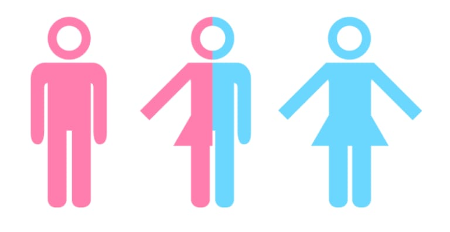

El género intersexual es una condición en la que una persona nace con características sexuales que no se ajustan típicamente a las definiciones binarias de género masculino o femenino. Esto puede incluir variaciones en genitales, cromosomas, hormonas u otras características sexuales.
El género intersexual puede ser causado por una variedad de factores, incluyendo diferencias genéticas, hormonales o ambientales durante el desarrollo fetal.
El tratamiento del género intersexual varía según cada caso. Puede incluir cirugía, terapia hormonal y apoyo psicológico, pero es importante respetar la autonomía de la persona intersexual en las decisiones relacionadas con su género y cuerpo.
Las personas intersexuales tienen derecho a la igualdad, la no discriminación y el respeto a su autonomía. Esto incluye el derecho a recibir atención médica informada y el derecho a la autodeterminación de género.
